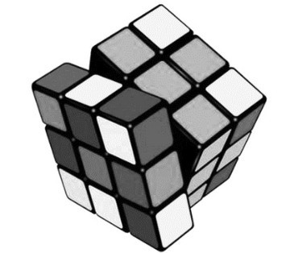
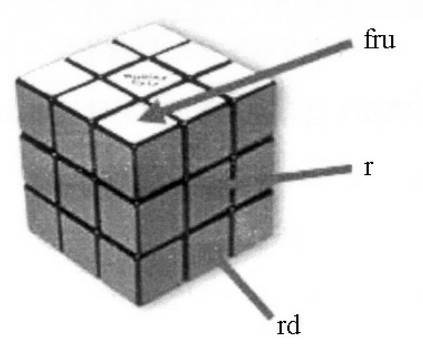
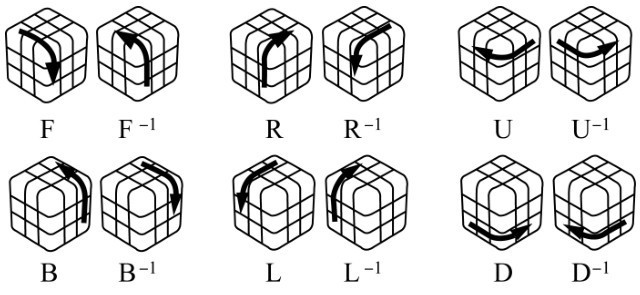
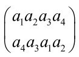
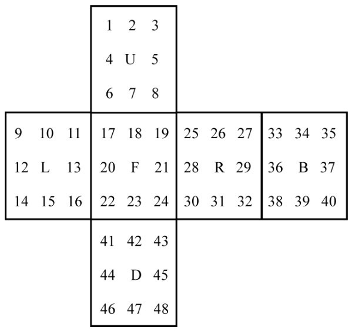
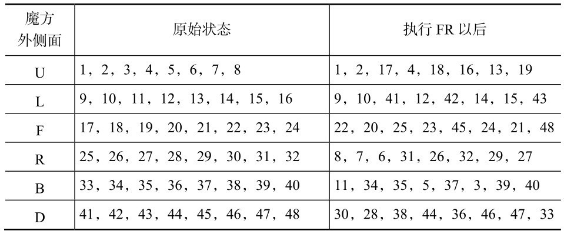
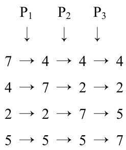
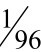

魔方是一些竞技类节目中常用的道具，《最强大脑》也不例外。第一季中的“魔方墙找茬”“水下盲拧魔方”，第二季中的“魔方工厂”，第三季中的“魔方速拧”“魔方盲拧”等都无不与魔方有关。但这些都是在考察选手们的观察力、记忆力以及拧魔方的熟练程度。魔方与数学又有怎样的关系呢？
魔方是匈牙利布达佩斯应用艺术学院的建筑学教授鲁比克发明的。鲁比克最初想发明的并不是益智玩具，而是一个能演示空间转动，帮助学生直观理解空间几何的教学工具。经过一段时间的思考，他决定制作一个由小方块组成，各个面均能随意转动的3×3×3结构的立方体。
但如何才能让立方体的各个面既能随意转动，又不会散架呢？这一问题让鲁比克陷入了苦思。1974年一个夏日的午后，他正在多瑙河畔乘凉。当鲁比克的目光无意间落到河畔的鹅卵石上时，他忽然灵光乍现，想到了解决问题的方法，最后设计出了一个结构巧妙的十字轴作为旋转中心。十字轴有一个六向接头，每一头分别连接着6个中心块，8个角块和12个边块依次镶嵌在旋转中心上，便组成了一个完整的立方体。这时它就可以按横列或纵列绕中心任意旋转，构造变化无穷的图案了。
鲁比克在1975年为自己的发明申请了专利，并决心大量生产这种玩具。1980年，在纽伦堡的国际玩具展览会上，魔方（如图5-1所示）以它巧妙的结构、千变万化的图案和其中包含的深奥的数学原理而轰动一时，随后被评为1980年世界最佳玩具，不久便风靡世界。

图5-1
不过对魔方的理论研究比这还要早两年，1978年在芬兰首都赫尔辛基召开的国际数学家大会上，一位匈牙利数学家带的几个魔方吸引了与会的专家、学者。其中有一位英国数学家辛马斯特，他对魔方更为着迷，于是就向匈牙利教授要了一个，回国后全力研究，后出版了一本《鲁比克魔方解法》的专著，这也是最早的关于魔方研究的理论专著。
据说德国数学家希尔伯特曾经表示，学习群论的窍门就是选取一个好的例子。自辛马斯特后，数学家们写了好几本通过魔方讲述群论的书。因此，魔方在一定程度上可以作为学习群论的“好的例子”。那么，什么是群论呢？
群论是由法国数学家埃瓦里斯特·伽罗瓦（1811—1832）在研究高次代数方程的求解问题中创立的。在这之前，挪威数学家尼尔斯·阿贝尔（1802—1829）证明了4次以上代数方程不能通过根式求解，但他的证明方法十分复杂。伽罗瓦另辟蹊径，利用对每个方程构造一个置换群的思想与方法，彻底解决了代数方程通过根式求解的问题，这就是所谓的“伽罗瓦理论”，并从而开辟了一个新的代数领域——群论。
群有多种类型，但它们有一个基本定义：设G是一个非空集合，*是它的一个运算，如果满足以下条件，则称G对*构成一个群。若群中元素个数是有限的，则是有限群，否则为无限群。有限群的元素个数称为有限群的阶。
①封闭性：若a、b∈G（这里的记号∈代表“属于”），则存在唯一确定的c∈G使得a*b=c；
②结合律：即对G中任意元素a,b,c都有(a*b)*c=a*(b*c)；
③单位元存在：存在e∈G，对任意a∈G，满足a*e=e*a=a，e称为单位元，也称幺元；
④逆元存在：任意a∈G，存在b∈G使a*b=b*a=e（e为单位元），则称a与b互为逆元素，简称逆元。b记作a-1。
我们用一个简单的例子来加深大家对群的理解：全体整数的集合G对于加法“+”构成一个群，这是因为它满足以下条件。
①对于任何两个整数a和b，它们的和a+b也是整数，也就是在加法运算下封闭。
②对于任何整数a,b,c，(a+b)+c=a+(b+c)，故符合结合律。
③对于任何整数a，有0+a=a+0=a，零叫作加法的幺元。
④对于任何整数a，存在另一个整数b，使得a+b=b+a=0，整数b叫作整数a的逆元，记为a-1。
下面我们还必须将魔方的各部件及其基本操作予以命名。
魔方共有6个外表面，可分别用其英文名称第一个字母的小写形式来代替，即前（f）、后（b）、右（r）、左（l）、上（u）、下（d）。魔方有8个角，我们把位于各个角落上的方块称为“角块”。由于每个角块包含3个面的一部分（以下称为“小面”），我们可以用这3个小面的代号来命名这个角块，例如包含前、右、上这个小面的角块可以称为“fru”，如图5-2所示，其他的角块命名以此类推。魔方有12条处于外沿的边，我们把位于每条边中间位置上的方块称为“边块”。由于每个边块包含两个小面，可以用这两个小面的代号来命名这个边块，例如包含右、下这两个小面的边块便可以称为“rd”，如图5-2所示。此外，魔方的外表面的6个中心位置还各有一个方块，称为“中心块”，每个中心块只包含一个小面。我们可以用这个小面的代号来命名，例如包含右小面的中心块便可以称为（r），如图5-2所示。请注意，魔方的6个中心块起着识别6个外表面的作用，即在还原魔方的过程中，我们要设法令所有角块和边块包含的每个小面与该小面所在的外表面上的中心块同色。

图5-2
魔方的每个外表面都可朝顺时针或逆时针（这里的顺/逆时针是相对于你把待旋转的外表面正对着你而言的）两个方向旋转，这也是玩魔方的基本操作。我们用魔方6个外表面英文名称的第一个字母的大写F,B,R,L,U,D分别代表把魔方的前、后、右、左、上、下等面顺时针旋转90°的动作。而对应的逆时针则是前述6个顺时针旋转的逆向操作，可用F-1,B-1,R-1,L-1,U-1,D-1表示。图5-3显示了上述12个操作。

图5-3
知道了群的基本概念和魔方的基本操作后，下面把这两者结合起来讲一下魔方群。
群有许多类型，置换群是其中很重要的一种。我们知道，将n个不同元素从一种排列变成另一种排列就叫一个置换。例如，把排列a1a2a3a4变成a4a3a1a2就是一个置换，记为

也可以简单地记为（a1a4a2a3），表示a1变为a4、a4变为a2、a2变为a3、a3变为a1。
如果在置换中把原排列的第一个元素换为第二个元素，第二个元素换为第三个元素……，最后一个元素换为第一个元素，则这种置换叫作“轮换”，也叫“循环换位”。如果在置换中只有两个元素互换了位置，其他元素位置不变，这样的置换叫作“对换”。显然，任何一个置换都可以看成连续施加若干个对换的结果。所谓置换群，就是由有限个集合元素的置换所构成的群。
把数学上关于置换和置换群的概念用到魔方上来，我们看到，魔方任意面的一个q转就形成一个置换；对魔方的各种各样的操作的集合就形成一个置换群，被叫作“魔方群”。所谓1个q转就是：用左手握住魔方，用右手按顺时针方向或逆时针方向旋转一个外表面。旋转角度通常是90°，即一个象限（1 quarter），因此被叫作一个q转。如果外表面一次转180°，就叫2个q转。如顶面顺时针转90°记为U，那么转180°则记为U2，以此类推。
为了让读者更直观地理解魔方群是置换群，我们用图解的方法介绍如下。先把原始状态的魔方展开成平面图，如图5-4所示，读者可以把小块的纸片粘在魔方小块上，则下述置换看起来就十分形象了。

图5-4
现在实现操作FR（即前侧面顺时针旋转90°，接着将右侧面顺时针旋转90°），这时小面的布局发生了变化，如顶面上标号为3的小面跑到背面上原先被标记为38的小面的位置上去了，而标号为38的小面则跑到底面上原先被标号为43的位置，如此等等。其全部情况如表5-1所示，显然，这就是对48个元素（小面）的一个重新排列，即置换。
表5-1 魔方的一个置换

由此可见，魔方上置换群的对象可视作对魔方的各种操作过程，也可以视作各小面的置换。类似FR的运算可称为一个“后随”，即把前后两次操作过程连接起来变成一个操作过程，或是说把前后两个操作过程所产生的置换连接起来，变成一个置换。
[此书 分 享微 信jnztxy]最后我们要验证上述对象和运算是否满足群的4个条件。
①封闭性。对魔方而言，置换X“后随”置换Y，一定是魔方上的另一个置换XY，这个条件是满足的。
②结合律。例如操作FRD，则（FR）D与F（RD）的结果是一样的，表示优先的括号是不起作用的，所以这个条件也满足。
③单位元存在。对魔方来说，在各种各样的置换中，哪个是幺元呢？不去拧魔方的任一面，其实就是不发生任何置换，就是幺元。
④逆元存在。魔方的任何过程都有一个逆过程，它产生的置换就是原过程产生的置换的逆。二者一先一后，就等于什么也没发生，所以魔方也是满足这个条件的。
综上所述，魔方满足群的基本要求（一个集合和一个运算），也满足群的4个条件。所以人们把这个群叫作“魔方群”，从而建立了魔方与群论的直接联系。
通过以上讨论，大家对群特别是魔方群已经有了一个大体上的认识。在这个基础上，我们可以深入群的内部，讨论一下群的结构了。就魔方群而言，因为群中的元素就是置换，所以群的结构无非就是置换的结构，而置换的结构的核心问题就是它的奇偶性。
我们提到过，任何置换都可以看成连续施加若干个对换，即只有2个元素互换位置的置换。所谓置换的奇偶性指的是把它分解为对换时，对换的个数是奇数还是偶数。如果是奇数就说它是奇性的，是偶数就说它是偶性的。对于后随操作，可定义为置换的积。它的奇偶性类似于确定奇、偶整数相加的奇偶性。
下面以转动顶面为例，求解一个q转后产生了什么样的置换，以加深大家的印象。
转动顶面时，它产生如下置换：边块的循环换位是（uf,ul,ub,ur），用数字的简易写法是（7,4,2,5）；对角块的循环是（ufl,ulb, ubr,urf）。用边块的循环换位的置换P来分析，可以把P写成如下连续发生的3个对换P1,P2,P3。

首先，边块7和4互相交换位置。然后，边块4（现在在逕垳7的位置）同边块2交换位置。接着边块2（现在在边块7的位置）同边块5互换位置。因此，P可以分解为3个对换：
P=P1P2P3=(7,4)(7,2)(7,5)
同样地，角块的循环换位也可以分解为3个对换。显然，边块和角块的循环换位是两个不相交的过程，所以有奇奇得偶，因此这个置换是偶性的。类似地，任何外侧面的1个正转都造成偶置换。任何复杂的过程都可以分解为对6个外侧面的多次正转，因此必然都造成偶置换，也就是说，对魔方的任何操作都将产生偶置换。换句话说，要想在魔方上形成奇置换是不可能的。
联想我们在第一章中的“14～15”游戏，从初局到所要求的终局就是一个奇置换（实际上是2个元素的一次对换）。看来，这一类有排列性质的益智玩具都很可能遇上判断置换的奇偶性的问题。
必须指出，魔方中不仅有置换群，还有循环群、子群等概念，魔方中出现的操作也不只是6个面的旋转，例如夹心层操作及魔方作整体旋转。笔者只是选择了易被大家理解的置换群，以及涉及它的几个基本操作，以此将魔方与群论之间的关系做简单介绍，有兴趣的读者可参阅吴鹤龄先生的专著《魅力魔方》。
群论是从实践中发展起来的，但又是一门高度抽象的学科。鲁比克魔方问世之后，可通过魔方来学习群论，使它的理论变得十分具体、浅显易懂；反过来，在群论的指导下，魔方六面还原的方法也有规可循，不再难以捉摸。正是小玩具大学问！
魔方风靡的最大魔力就在于其惊人的颜色组合。一个魔方在出厂时每个面都仅有一种颜色，总共有6种颜色。但魔方被打乱后，所能形成的颜色组合却多达4.3×1019。具体的计算过程是这样的。在组成魔方的小立方体中有8个是顶点，它们之间有8！种置换；这些顶点每个有3种颜色，从而在朝向上有37种组合（由于结构有限，魔方的顶点只有7个能有独立朝向）。类似地，魔方有12个小立方体是边，它们之间有12！/2种置换（之所以除以2，是因为魔方的顶点一旦确定，边的置换就只有一半是可能的）；这些边每个有两种颜色，在朝向上有211种组合（由于结构所限，魔方的边只有11个能有独立朝向）。因此，魔方的颜色组合总数为8!×37×12!× 211/2=43,252,003,274,489,856,000，即大约4.3×1019。这正是魔方群的阶。
但这里有一个疏漏，那就是未曾考虑到魔方作为一个立方体所具有的对称性。由此导致的结果是这些颜色组合中有很多其实是完全相同的，只是从不同的角度去看（比如让不同的面朝上或者通过镜子去看）而已。因此，4.3×1019这个令人望而生畏的数字实际上是夸大了的。仅凭对称性一项，数学家们就可以把魔方的颜色组合减少至这个数的

，即约4.3×1017种组合。在对魔方的数学研究中，转动是指将魔方的任意一个面沿顺时针或逆时针方向转动90°或180°。对每个面来说，这样的转动共有3种。由于魔方有6个面，因此它的基本转动方式共有18种。那么，最少需要多少次转动，才能确保无论什么样的颜色组合都能被复原呢？这个问题引起了很多人尤其是数学家们的兴趣。这个复原任意组合所需的最少转动次数被数学家们戏称为“上帝之数”，而魔方这个玩具宠儿也由于这个“上帝之数”一举侵入了学术界。
要研究“上帝之数”，首先当然要研究魔方的复原方法。在玩魔方的过程中，人们早就知道将任何一种给定的颜色复原都是很容易的，这一点已由玩家们的无数杰出记录所证明。不过，魔方玩家们所有的复原方法是便于人脑掌握的方法，不是转动次数最少的，因此无助于寻找“上帝之数”。
1992年，德国数学家科先巴提出了一种寻找魔方复原方法的新思路。他发现，在魔方的18种基本转动方式中有10种自成系列，通过这部分转动可以形成将近200亿种颜色组合。利用这近200亿种颜色组合，科先巴将魔方的复原问题分解成了两个步骤：第一步是将任意一种颜色组合转变为这200亿种颜色组合之一，第二步则是将这200亿种颜色组合复原。如果我们把魔方的复原比作让一条汪洋大海中的小船驶往一个固定的目的地，那么科先巴提出的那200亿种颜色组合就好比是一片特殊水域，一片比那个固定目的地大了200亿倍的特殊水域。他提出的两个步骤就好比是让小船首先驶往那片特殊水域，然后再从那里驶往那个固定目的地。在汪洋大海中寻找一片巨大的特殊水域，显然要比直接寻找那个小小的目的地容易得多，这就是科先巴新思路的巧妙之处。
但即便如此，要用科先巴的新思路对“上帝之数”进行估算仍不是一件容易的事。尤其是要想进行快速计算，最好是将复原那200亿种颜色组合的最少转动次数存储在计算机的内存中，这大约需要300兆字节（300MB）的内存。300兆字节在今天看来是一个不太大的数目，但在科先巴提出新思路的年代，普通计算机的内存连它的十分之一都远远不到。因此直到3年之后，才有人利用科先巴的新思路给出了第一个估算结果。此人名叫里德，是美国佛罗里达大学的数学家。1995年，里德通过计算发现，最多经过12次转动，就可以将魔方的任意一种颜色组合转变为科先巴新思路中的200亿种颜色组合之一；而最多经过18次转动，就可以将那200亿种颜色组合中的任意一种复原。这表明最多经过30(=12+18）次的转动，就可以将魔方的任意一种颜色组合复原。
在得到上述结果后，里德很快对自己的估算作了改进，将结果从30减少为29，这表明“上帝之数”不会超过29。此后随着计算机技术的发展，数学家们对里德的结果又做出了进一步改进，但进展并不迅速。直到11年后的2006年，奥地利开普勒大学符号计算研究所的博士生拉杜才将结果推进到了27。第二年（即2007年），美国东北大学的计算机科学家孔克拉和库伯曼又将结果推进到了26。他们的工作采用了并行计算系统，所用的最大储存空间高达700万兆字节（7×106MB），所耗的计算时间长达8000小时（相当于24小时不停歇计算将近一年的时间）。
这些计算表明，“上帝之数”不会超过26。但是，所有这些计算的最大优点（即利用科先巴新思路中的那片特殊水域）同时也是它们最致命的弱点，因为它们给出的复原方法都必须经过那片特殊水域。可事实上，很多颜色组合的最佳复原方法根本不需要经过那片特殊水域，比如紧邻目的地却恰好不在特殊水域中的任何小船，就没必要故意从那片特殊水域绕一下才前往目的地。因此，用科先巴新思路得到的复原方法未必是最佳的，由此对“上帝之数”所做的估计也极有可能是大了。
可是，如果不引进科先巴新思路中的特殊水域，计算量又实在太大，怎么办呢？数学家们决定采取折中手段，即扩大那片特殊水域的“面积”。因为特殊水域越大，最佳复原路径恰好经过它的可能性也就越大（当然，计算量也会相应地增加）。2008年，研究“上帝之数”长达15年之久的计算机高手罗基奇运用了相当于将科先巴新思路中的特殊水域扩大几千倍的巧妙方法，在短短几个月的时间内对“上帝之数”连续发动了4次猛烈攻击，将它的估计值从25一直压缩到了22。
由此我们进一步知道，“上帝之数”一定不会超过22。但是，罗基奇虽然将科先巴新思路中的特殊水域扩展得很大，终究仍有些颜色组合的最佳复原方法是无须经过那片特殊水域的。因此，“上帝之数”很可能比22更小。那么，它究竟是多少呢？种种迹象表明，它极有可能是20。这是因为人们在过去这么多年的努力中，从未遇到过任何必须用20次以上转动才能复原的颜色组合，这表明“上帝之数”很可能不大于20；另一方面，人们已经发现了几万种颜色组合，它们至少要用20次转动才能复原，这表明“上帝之数”不可能小于20。将这两方面综合起来，数学家们普遍相信，“上帝之数”的真正数值就是20。2010年8月，这个由游戏与数学交织而成的神秘的“上帝之数”终于水落石出：研究“上帝之数”的元老科先巴、新秀罗基奇，以及另外两位合作者宣布了对“上帝之数”是20的证明。